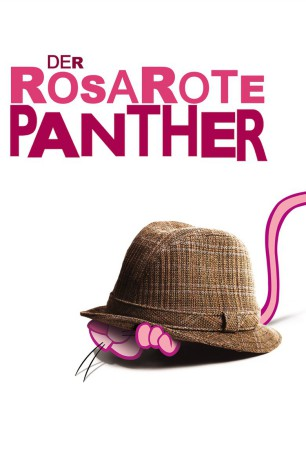
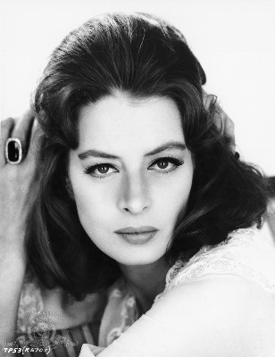

#3629 Der Rosarote Panther
Alternativ: The Pink Panther
Auszeichnungen: für 1 Oscars nominiert
 
 IMDB-Wertung: 7.2 / 10
IMDB-Wertung: 7.2 / 10  Metascore: 0
Metascore: 0 
Inspektor Clouseau ist auf der Jagd nach dem “Phantom”, das seit langer Zeit reiche Frauen um ihre Schmucksammlungen erleichtert. Jetzt kommt die indische Prinzessin Dala in sein Revier, und die ist Besitzerin des “Rosaroten Panthers”, des wertvollsten Diamanten der Welt. George Lytton, der Neffe von Sir Charles, versucht in Besitz des Diamanten zu kommen und die Tat dem “Phantom” in die Schuhe zu schieben. Dabei weiß er nicht, genauso wenig wie Clouseau, daß sein Onkel der lange gesuchte Diamantendieb ist.
Jahr: 1963
Dauer: 115 Minuten
FSK: 12
Land: USA Studio: United ArtistsTonspuren: DTS - ,
Untertitel: Deutsch, Englisch,
Auflösung: 1080p (1920x816) Größe: 10240 MB
Genre: Komödie, Krimi
Regisseur: Blake Edwards
Drehbuch: David Shaber
Soundtrack:
Darsteller:
 David Niven als Sir Charles Lytton
David Niven als Sir Charles Lytton Peter Sellers als Insp. Jacques Clouseau
Peter Sellers als Insp. Jacques Clouseau Robert Wagner als George Lytton
Robert Wagner als George Lytton-  Capucine als Simone Clouseau
 John Le Mesurier als Defence Barrister
John Le Mesurier als Defence Barrister Claudia Cardinale als The Princess
Claudia Cardinale als The Princess- Brenda de Banzie als Angela Dunning
 Colin Gordon als Tucker
Colin Gordon als Tucker- James Lanphier als Saloud
- Guy Thomajan als Artoff
- Michael Trubshawe als Felix Townes
- Riccardo Billi als Aristotle Sarajos
- Meri Welles als Monica Fawn
- Martin Miller als Pierre Luigi - Photographer
- Fran Jeffries als Greek 'cousin'
 William Bryant als Policeman , uncredited
William Bryant als Policeman , uncredited- Mario Fabrizi als Hotel Manager , uncredited
- Eugene Walter als Hotel Manager , uncredited
Datei: X:\7+mehr(A-Z)\Rosarote Panther\Rosarote Panther, Der (1963, FSK12, 1920x816).mkv seit 10.05.2016
Festplatte: HD Collection-7+mehr(A-Z)+Person
 Es gibt insgesamt 13 Filme in der Gruppe '7+mehr(A-Z)\Rosarote Panther'
Es gibt insgesamt 13 Filme in der Gruppe '7+mehr(A-Z)\Rosarote Panther'